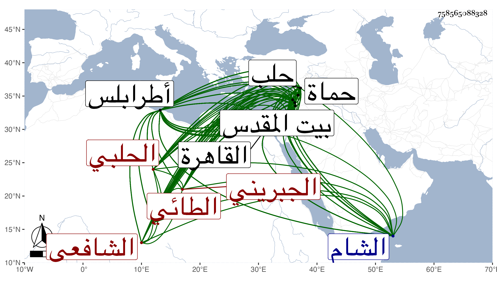

0902Sakhawi.DawLamic.ITO20230111-ara1.EIS1600.758565088328
Biography ID: 758565088328
1016
علي بن محمد بن سعد بن محمد بن علي بن عثمان بن إسماعيل بن إبراهيم ابن يوسف بن يعقوب بن علي بن هبة الله بن ناجية العلاء أبو الحسن بن خطيب الناصرية الشمس الطائي الجبريني نسبة لبيت جبرين الفستق ظاهر حلب من شرقيها ثم الحلبي الشافعي سبط العالم المدرس الزين علي بن العلامة قاضي قضاة حلب الفخر أبي عمرو عثمان بن علي بن عثمان الطائي بن الخطيب بل والزين هذا ابن عم جده لأبيه ويعرف العلاء بابن خطيب الناصرية . ولد في سنة أربع وسبعين وسبعمائة بحلب ونشأ بها فحفظ القرآن وكتبا منها المنهاج الفرعي والأربعين المخرجة من مسند الشافعي الملقبة بسلاسل الذهب من رواية الشافعي عن مالك عن نافع عن ابن عمر وألفية الحديث للعراقي وألفية النحو لابن معطي وانتفع في حفظها بوالده الآتي وفي القراءات بالفقيه الشمس محمد بن علي بن أحمد بن أبي البركات الغزي ثم الحلبي فإنه قرأ عليه وهو صغير جدا بعض القرآن ثم أكمله على غيره وعرض الأولين في سنة تسع وثمانين على جماعة منهم الجمال عبد الله بن محمد بن إبراهيم بن محمد النحريري المالكي والمنهاج وحده فيها أيضا على الشمس أبي عبد الله محمد بن نجم بن محمد ابن النجار الحلبي الحنفي وكتب له خطه بذلك وفي سنة ست وتسعين على السراج البلقيني بحلب والألفيتين على جماعة منهم الشمس محمد بن مبارك بن عثمان البسقاقي الحلبي الحنفي وأجازا له بل استجاز له أبوه من شيوخ القاهرة حين دخلها في سنة ثلاث وثمانمائة الزين العراقي وكتب خطه بذلك ، واستصحب معه ولده قبل ذلك سنة خمس وثمانين إلى بيت المقدس فزار الشيخ عبد الله بن خليل البسطامي وأضافهما ودعا لهما وجود العلاء القرآن على أحمد الحموي المقرئ وبعضه على محمد اليمني المقرئ نزيل حلب وأحمد بن محمد بن أحمد بن الشويش الجبريني الحلبي أحد من برع في القراءات وفي حل الشاطبية ، ومن شيوخه في العلم التاج باح بن محمود الأصفهيدي العجمي قرأ عليه في الفقه والنحو وكثر اجتماعه به وقرأ فيهما أيضا على الشمس محمد بن سلمان بن عبد الله الحموي بن الخراط وكذا سمع دروسه فيهما أيضا وفي الأصول ولازمه مدة وقرأ في الفقه وغيره كالعربية على الجمال يوسف بن خطيب المنصورية بحلب وبحماة وطرابلس وحضر دروسه في التفسير وهو أول من أذن له في الإفتاء وكتب له خطه بذلك وهو ممن أخذ العربية عن السري المالكي وحضر دروس السراج البلقيني في سنة ثلاث وتسعين ثم في سنة ست وتسعين حين قدم عليهم حلب فيهما وقرأ غالب المنهاج بحثا على الزين أبي حفص عمر بن محمود بن محمد الكركي ويقال أن البرهان الحلبي كان يلومه في أخذه عنه ويقول له إنك أفضل منه ، وأخذ في الفقه أيضا مدة عن الشمس أبي عبد الله محمد بن علي بن يعقوب النابلسي نزيل حلب ويسيرا عن الشرف الداديخي وكان يحاققه في أشياء يكون الظفر فيها بالمنقول مع صاحب الترجمة وقرأ طرفا من النحو أيضا على الشمس أبي عبد الله محمد بن أحمد بن علي بن سليمان المعري الحلبي الشافعي المعروف بابن الركن والعز أبي البقاء محمد بن خليل الحاضري الحنفي بل وسمع عليه أيضا الحديث وكان رفيقه في القضاء بحلب سنين وطرفا من الفرائض على الشمس محمد بن إسماعيل بن الحسن بن خميس البابي والسراج عبد اللطيف ابن أحمد الفوي بحلب بل قرأ عليه تخميسة للبردة وكتب عنه من نظمه أشياء وقطعة من مختصر ابن الحاجب الأصلي وجانبا من الفقه على العلاء أبي الحسن علي بن محمد بن يحيى التميمي الصرخدي نزيل حلب وانتفع به كثيرا وكذا بالشمس البابي الكبير وطرفا من المعاني والبيان على المحب أبي الوليد ابن الشحنة وحضر عنده كثيرا وكتب عنه من نظمه ونثره ، ومن شيوخه أيضا القاضي الشرف أبو البركات موسى الأنصاري الحلبي قاضيها الشافعي وأخذالحديث عن الولي العراقي والبرهان الحلبي ولازمه كثيرا وبه تخرج وعليه انتفع وكذا أخذ قديما وحديثا عن شيخنا وأحضر في الخامسة على البدر بن حبيب وسمع على الشهاب بن المرحل والشرف أبي بكر الحراني وابن صديق والعز أبي جعفر الحسيني وأبي الحسن علي بن إبراهيم بن يعقوب بن صقر والشهاب أبي جعفر أحمد وأم الحسن فاطمة ابنة الشهاب الحسيني الإسحاقي وجماعة من أهلها والقادمين عليها فكان من القادمين الغياث محمد بن محمد بن عبد الله العاقولي بل سمع من لفظه حديث الأعمال بالنيات والكلام على فوائده وأحكامه وأنشده شيئا من شعره وأجاز له وذلك في سنة ست وتسعين والبدر بن أبي البقاء السبكي اجتمع به وصحبه وقرأ على الجمال يوسف بن موسى الملطي السيرة النبوية والدر المنظوم من كلام المصطفى المعصوم كلاهما لمغلطاي بقراءته لهما على مؤلفهما وارتحل إلى القاهرة فقرأ بدمشق في ربيع الأول سنة ثمان وثمانمائة المسلسل علي الجمال بن الشرائحي وسمع منه ومن عائشة ابنة عبد الهادي وطيبغا الشريفي وأحمد بن عبد الله بن الفخر البعلي وحضر دروس جماعة فيها كالجمال الطيماني ، قال ابن قاضي شهبة حضر عنده وأنا أقرأ عليه في الحاوي فكان يستحضر كثيرا، وبالقاهرة من القطب عبد الكريم حفيد الحافظ القطب الحلبي والتقى الدجوي والشريف النسابه الكثير في آخرين كشيخنا علق عنه كثيرا من كتابه تعليق التعليق ثم سمع منه بعد ذلك أشياء وكالشرف بن الكويك والجلال البلقيني سمع عليه البعض من سنن النسائي الصغرى بل قرأ عليه بحلب البعض من مبهماته وأخذ بها على النور بن سيف الأبياري اللغوي قرأ عليه جزءا من تصنيف شيخه العنابي اسمه الوافر في فعل المتعدي والقاصر بقراءته له على مؤلفه وذكر العلاء لشيخه حين قراءته عليه له أن مؤلفه فاته الكثير من الأفعال التي تستعمل لازمه ومتعدية فاستحسن الشيخ ذلك وبالغ في تعظيمه ووصفه بخطه بالعلامة وحلف أنه لم يكتبها لأحد قبله ، وكذا اجتمع في القاهرة بالشمس بن الديري وكتب عنه في آخرين منهم الأديب الشمس أبو الفضل محمد بن علي بن أبي بكر المصري كتب عنه في ربيع الأول سنة تسع شيئا من نظمه وكذا سمع دروس البيجوري والولي العراقي وسافر من القاهرة في هذا الشهر وكتب فيه بقاقون عن ناصر الدين بن البارزي القاضي شيئا من نظمه أيضا وببعلبك عن التاج بن بردس وغيره وبطرابلس عن الشرف مسعود بن شعبان الطائي الحلبي الشافعي كتب عنه شيئا من شعر غيره وكذا كتب فيها في رجب سنة أربع وثمانمائة عن البدر محمد بن موسى بن محمد بن الشهاب محمود شيئا من نظمه وكتب لكاتب سرها الجمال عبد الكافي ابن محمد بن أحمد بن فضل الله يستجيزه :
| أسيدنا شيخ العلوم ومن غدت | فواضله أندى من الغيث والبحر |
| أجب وأجز عبدا ببابك لم يزل | بإمداحكم رطب اللسان مدى الدهر |
فأجابه بقوله :
| أيا سيدا ما زال في الفضل واحدا | جبرت كسيرا بالسؤال بلا نكر |
| نعم إذ بدأت العبد أنت مقدما | وفضلك أضحى بالتقدم لي جبرى |
ثم لقيه بطرابلس وسمع منه من نظمه شفاها وتكرر قدومه بعد ذلك القاهرة وآخر قدماته في ربيع الآخر سنة ثلاث وأربعين فإنه كان صرف فأعيد وتوجه منها في حادي عشر شعبان منها فدخل بلده في أوائل شوال موعوكا ولم يلبث أن مات ، وقبل ذلك دخلها في شوال سنة أربع وعشرين بعد أن زار بيت المقدس وحينئذ ولي قضاء طرابلس كما سيأتي وقبل ذلك في سنة ست عشرة وولي فيها قضاء حلب كما سيأتي ، وحج ثلاث مرات أولها في سنة ست عشرة واجتمع بالجمال بن ظهيرة وسمع خطبته لكنه لم يسمع عليه ولا على غيره هناك شيئا للإشتغال بالمناسك وثانيهما في سنة ست وعشرين ، وكان إماما علامة محققا متقنا بارعا في الفقه كثير الاستحضار له إماما في الحديث مشاركا في الأصول مشاركة جيدة وكذا في العربية وغيرها مستحضرا للتاريخ لا سيما السيرة النبوية فيكاد يحفظ مؤلف ابن سيد الناس فيها كل ذلك مع الإتقان والثقة وحسن المحاضرة وجودة المذاكرة والرياسة والحشمة والوجاهة والثروة مع صمم يسير ، اشتهر ذكره وبعد صيته وصار مرجع الشافعية في قطره وقد كثر اعتناؤه بأخبار بلده وتراجم أعيانها بحيث جمع لها تاريخا حافلا ذيل به على تاريخ الكمال بن العديم وأكثر فيه الاستمداد من شيخنا وقد طالعه شيخنا من المسودة في حلب ثم من نسخة كتبت للكمال بن البارزي وبين بهوامشها عدة استدراكات وكذا طالعته من هذه النسخة أيضا غير مرة ونبهت على مواضع أيضا مهمة وهو نظيف اللسان والقلم في التراجم لكن فاته مما هو على شرطه خلق وله غيره من التصانيف كالطيبة الرائحة في تفسير الفاتحة انتزعه من تفسير البغوي بزيادات وسيرة المؤيد وشرح حديث أم زرع وهو حافل وكذا كتب على الأنوار الأردبيلي كتابة متقنة جامعة يحاكي فيها شرح المهذب للفوي وأشياء غيرها وولي قضاء بلده غير مرة أولها سنة ست عشرة وبعد ذلك سأله الظاهر ططر شفاها بحضرة الولي العراقي قاضي الشافعية إذ ذاك في ولاية قضاء طرابلس فامتنع فألح عليه وكرره حتى قبل ، وسافر من القاهرة إلى جهة طرابلس فوصلها في يوم عرفة سنة أربع وعشرين وكان فيها في السنة التي بعدها أيضا وحمدت سيرته في البلدين وولي الخطابة بالجامع الكبير ببلده مع إمامته ودرس قديما وأفتى واستقر به يشبك المؤيدي نائب حلب في تدريس مسجده الذي بناه بالقرب من الشادبختية بحلب بعد العشرين فدرس فيه بحضرته وبحضرة الفقهاء وعمل لهم الواقف سماطا مليحا ، وحدث ببلده وبالقاهرة وغيرهما أخذ عنه الأئمة وكانت دروسه حافلة بحيث كان شيخه البرهان الحلبي يقول : هي دروس اجتهاد لم أسمع شبهها إلا من شيخنا البلقيني وكان شيخنا العلاء القلقشندي يقول ما قدم علينا من الغرباء مثله ولم يزل يدرس ويفتي ويصنف حتى مات ببلده في يوم الخميس منتصف ذي القعدة سنة ثلاث وأربعين بعد عوده من القاهرة بيسير ، ومن أرخه بشوال فقدسها ، ولم يخلف بعده بها في الشافعية مثله وخلف مالا جما رحمه الله وإيانا . وقد ذكره شيخي في معجمه وقال : سمعت من فوائده وعلق عني كثيرا من كتابي تعليق التعليق في سنة ثمان وثمانمائة ولما دخلت حلب مع الأشرف أنزلني في منزله وحضر معي عدة مجالس الإملاء وحدثت أنا وهو بجزء حديثي في قرية جبرين ظاهر حلب وله عناية كبيرة بأخبار بلده وتراجم علمائها كثير المذاكرة والاستحضار للسيرة النبوية ولكثير من الخلافيات ، انفرد برياسة المملكة الحلبية غير مدافع وذكره في أنبائه باختصار جدا وأثبت غيره في شيوخه الذين تفقه عليهم بالقاهرة ابن الملقن وهو غلط فلم يدخل القاهرة إلا بعد موته واجتماعه بالبلقيني إنما كان بحلب ، وقال ابن قاضي شهبة : كان يحفظ مواضيع كثيرة من العلوم فإذا جلس عنده أحد يذاكره بها فإن نقله إلى غيرها أظهر الصمم وعدم السماع وثقل عليه ذلك قال وقد عرض عليه قضاء الشام في الدولة الأشرفية والأيام الظاهرية فلم يقبل إلا على بلده والإقامة بها ونحوه قوله فيما تقدم أنه كان يستحضر كثيرا وقال المقريزي في عقوده أنه صار رئيس حلب على الإطلاق قدم القاهرة غير مرة فظهر من فضائله وكثرة استحضاره وتفننه ما عظم به قدره قال ولم يخلف ببلاد الشام بعده مثله رحمه الله .
